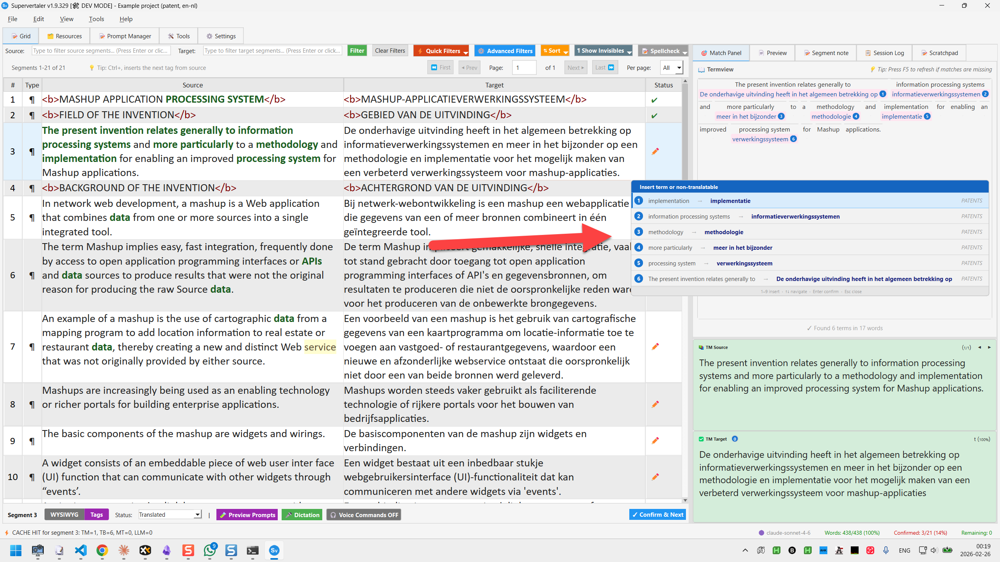
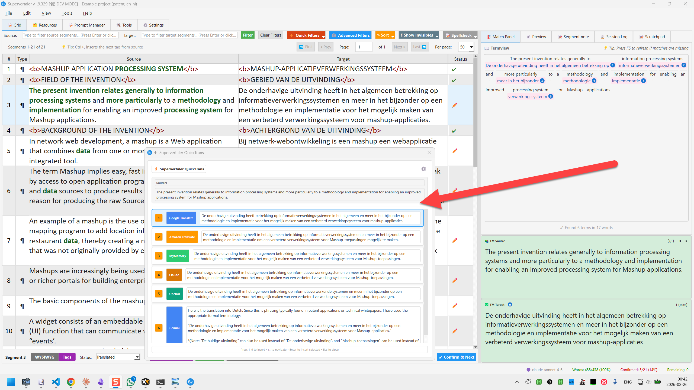
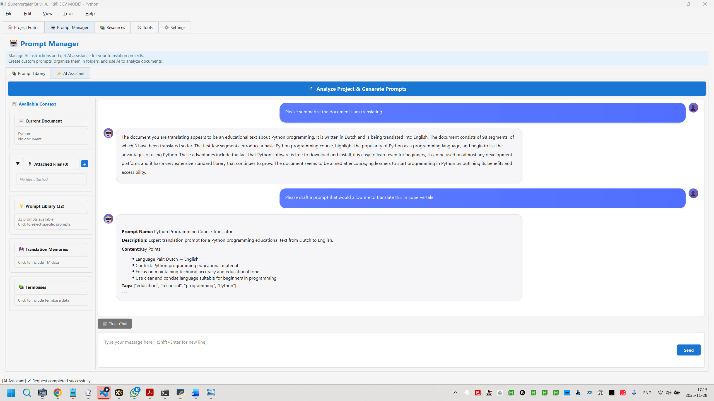
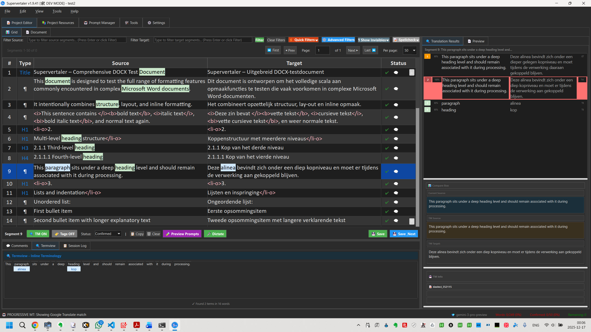

v1.9.352
AI-enhanced translation workbench. Work with ChatGPT, Claude, and Gemini simultaneously. Built by translators, for translators and writers.
Everything you need for professional translation work
Battle-tested Okapi Framework localization filters run as an automatic background sidecar. Full round-trip DOCX with exact formatting preservation.
Choose from the best AI models for your translation needs.
Lightning-fast batch pre-translation with fuzzy matching and TMX import/export.
System Prompts (auto-selected by mode) + Unified Prompt Library with folders, favorites, and multi-attach.
Grid, List, and Document views for reviewing AI translations. Professional CAT tool interface.
Import/export bilingual tables from memoQ, CafeTran, and Trados Studio.
Multi-chat AI browser with ChatGPT, Claude, and Gemini side-by-side in one window.
Transform badly-formatted PDFs into clean, editable documents with GPT-4 Vision OCR.
Free, open-source, cross-platform
AI-Enhanced Translation Workbench
Okapi file filters, multi-LLM translation, translation memory, terminology management, AI Assistant, and more. Built with PyQt6.
One command installation with easy updates.
pip install supervertalersupervertalerNo Python needed. Download, extract, and run.
Full source access for developers.
See Supervertaler in action

Press Ctrl once to open a floating popup listing all glossary matches and non-translatables for the current segment.

QuickTrans instant translation popup with MT engines and LLMs. Global hotkey works from any application.

Conversational AI assistant with file attachments, prompt generation, and document analysis.

Complete dark theme with properly styled UI panels. Easy on the eyes for late-night sessions.